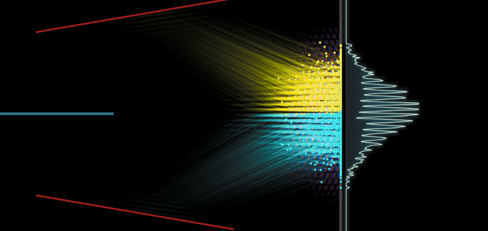
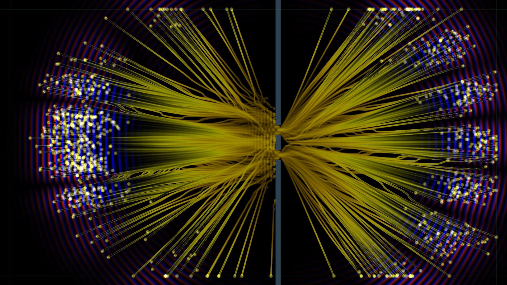

Interactive notebook / quantum mechanics
Bohmian particles & Eigenstates in a 3D Box
Explore stationary box eigenstates, Pauli spin current, and Bohmian trajectories.
Open notebook →Articles and video companions
Written explorations of physics, visualizations, and the ideas behind Imagining Physics videos.
Explore stationary box eigenstates, Pauli spin current, and Bohmian trajectories.
Open notebook →
Compare collapse and trajectory-based pictures of beam splitting, interference, detection, and delayed choice.
Open notebook →
Follow individual trajectories, reveal the interference pattern with an ensemble, and explore equivariance.
Open notebook →